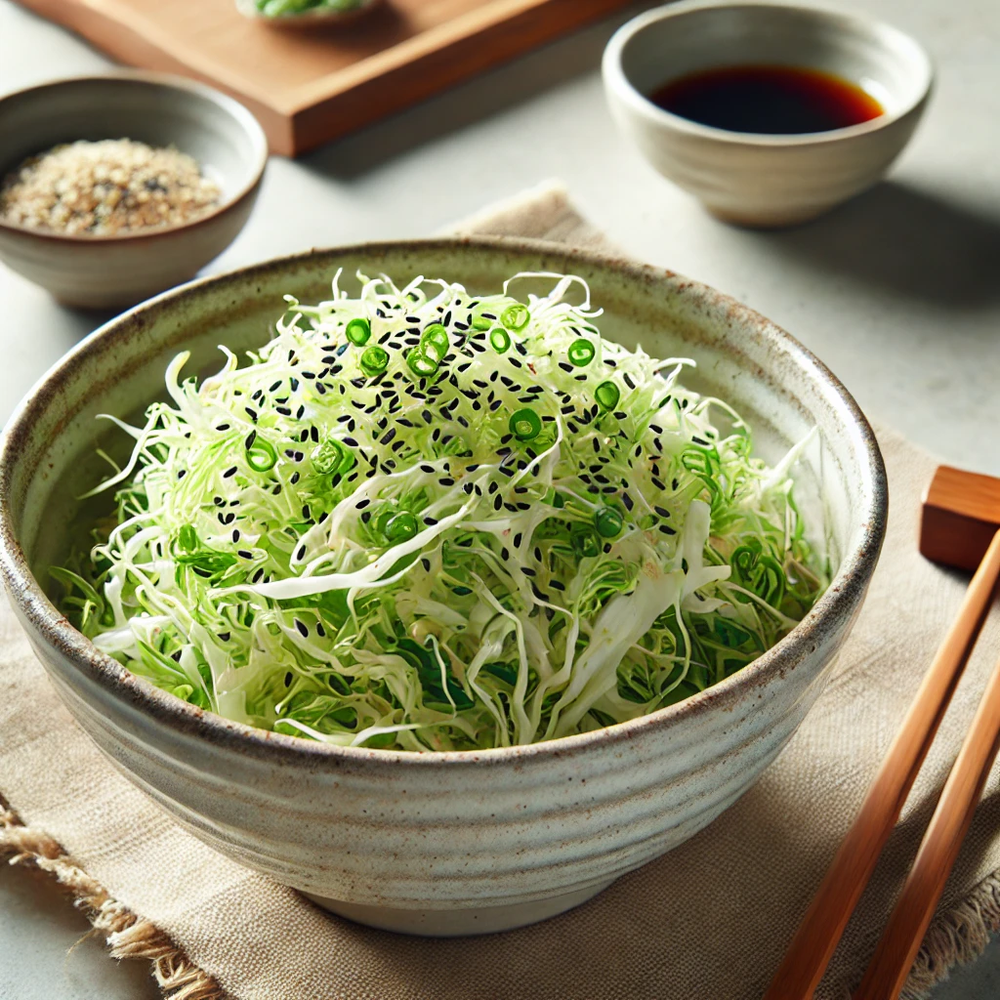

Home
Cabbage Salad Tossed in Shio Konbu

Description
Cabbage Shio Konbu Salad is a simple yet flavorful Japanese dish made with crunchy cabbage squares and strips of shio konbu (salted kelp).
The cabbage is lightly tossed in sesame oil and seasoned with the umami-rich shio konbu, creating a perfectly balanced side dish that complements any meal.
Garnished with sesame seeds and green onions, this salad is refreshing, healthy, and quick to prepare.
Ingredients
-
300g cabbage (about half a small head)
-
2 tablespoons shio konbu (salted kelp strips)
-
1 tablespoon sesame oil
-
1 teaspoon soy sauce
-
1 teaspoon rice vinegar (optional, for a slight tang)
-
1 teaspoon sesame seeds, toasted
Steps
-
Prepare the Cabbage:
-
Wash and dry the cabbage leaves thoroughly.
-
Cut the cabbage into roughly 2-3 cm square pieces.
-
Combine the Ingredients:
-
In a large bowl, add the cabbage squares and shio konbu strips.
-
Drizzle the sesame oil, soy sauce, and rice vinegar (if using) over the cabbage.
-
Mix and Marinate:
-
Toss everything together until the cabbage is evenly coated with the seasoning and the shio konbu is well distributed.
-
Let the salad sit for 5 minutes to allow the flavors to meld.
-
Serve:
-
Transfer the salad to a serving dish.
-
Sprinkle toasted sesame seeds on top for garnish.